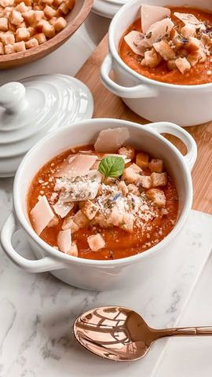

Da uozbiljimo malo stvar

Moja beleška
SačuvanoDa uozbiljimo malo stvar, da ne pomisle ljudi da mi slatkiše jedemo za doručak, ručak i večeru 😅 Ko me prati duže zna koliko Leka voli paradajz čorbicu, ostavljala sam vam i recept, a danas pripremim jedan lagani i preukusni 🍅 potaž, pa ako još ne znate šta biste za ručak, evo jednog gotovog za pola sata 🥰☺️ Isto tako znate koliko volim domaće proizvode i već ste kod mene vidjali proizvode koje je okupila online prodavnica @ukusiprirode.rs Proizvodi su preukusni, sveži, zdravi, bez aditiva i bespotrebnih konzervansa pa ih možete bezbrižno davati i dečici. Ovog puta je paradajz sok @vrtlari jedan od glavnih sastojaka čorbice💓 Paradajz potaž 🍅
Sastojci
Priprema
Postupak pripreme je u videu, lagano prodinstate, dok ne dobije na gustini i štapnim mikserom izblendate, Mi najviše volimo da jedemo uz krutone sa maslinovim uljem i belim lukom, a možete dodati i malko parmezana ili nekog tvrdjeg rendanog sira za puniji ukus ☺️ Uživajte i prijatno 🍅
Originalni opis sa Instagrama
Da uozbiljimo malo stvar, da ne pomisle ljudi da mi slatkiše jedemo za doručak, ručak i večeru 😅 Ko me prati duže zna koliko Leka voli paradajz čorbicu, ostavljala sam vam i recept, a danas pripremim jedan lagani i preukusni 🍅 potaž, pa ako još ne znate šta biste za ručak, evo jednog gotovog za pola sata 🥰☺️ Isto tako znate koliko volim domaće proizvode i već ste kod mene vidjali proizvode koje je okupila online prodavnica @ukusiprirode.rs Proizvodi su preukusni, sveži, zdravi, bez aditiva i bespotrebnih konzervansa pa ih možete bezbrižno davati i dečici. Ovog puta je paradajz sok @vrtlari jedan od glavnih sastojaka čorbice💓 Paradajz potaž 🍅 •dve kašike maslinovog ulja •1 glavica crnog luka sitno seckanog •2,3 čena belog luka •2 sveža paradajza •750 ml soka od paradajza •pola čaše pirinča •pola čaše vode •so, bosiljak Postupak pripreme je u videu, lagano prodinstate, dok ne dobije na gustini i štapnim mikserom izblendate, Mi najviše volimo da jedemo uz krutone sa maslinovim uljem i belim lukom, a možete dodati i malko parmezana ili nekog tvrdjeg rendanog sira za puniji ukus ☺️ Uživajte i prijatno 🍅 • • • #paradajz #paradajzsok #paradajzcorba #paradajzpotaž #laganoizdravo #idejezarucak #rucak #čorbica #potaz #zdravrucak #idejezazdraveobroke #ukusiprirode #tomatosoup #tomatoes #tomato #tomatoseason #lunchideas #lunchideasforkids #healtylunch #healtylunchideas #lunchtime #yummy #salty #dinner #dinnerideas #healtydinner #healtydinnerideas